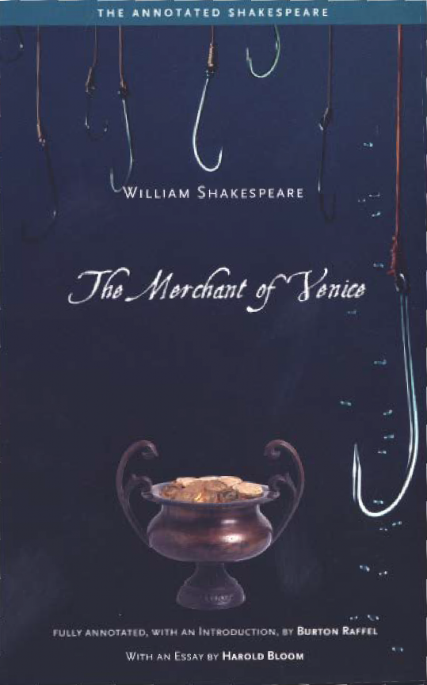

Next >

the annotated shakespeare
The Merchant of Venice
contents
About This Book ix Introduction xvii
introduction
Notes
some essentials of the shakespearean stage
The Stage
The Actors
The Audience
The Merchant of Venice
characters ( dramatis personae)
Act 1
scene 1
scene 2
scene 3
Act 2
scene 2
scene 3
scene 4
scene 5
scene 6
scene 7
scene 8
scene 9
Act 3
scene 1
scene 2
scene 3
scene 4
scene 5
Act 4
scene 2
Act 5
further reading
Texts
Language
Culture
Dramatic Development
Theater and Stage
Biography
General
finding list
Next >